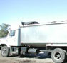
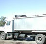

History of Mushrooms
Mushrooms are a delightful food that we can enjoy all year round, with plentiful supplies of the finest quality being delivered to our shops by dedicated mushroom farmers of Australia. Mushrooms are a healthy, flavoursome, versatile food that can be included in every meal of the day, from breakfast to late night suppers. They combine perfectly with salads, vegetables, meat, poultry, seafood and eggs (you can even use them in baking).
Although we can enjoy mushrooms in great abundance today, it wasn't always the case. Mushrooms are an ancient food dating back to early Egyptian times, when they were considered to be a rare luxury. In fact, the earliest reference to the use of mushrooms as a food dates back to the days when the pharaohs decreed them to be "too fine a delicacy to be eaten by the common people".
Theophrastes, in 300 BC, writes of Greek mushroom feasts and the export of mushrooms to neighbouring lands. The Romans also valued the mushroom and Julius Caesar even passed special laws decreeing who could and who could not enjoy the mushroom's unique flavour.
For centuries, the edible mushroom defied cultivation. It wasn't until the late 1600's that cultivation of the common white mushroom began in France, in quarry tunnels outside Paris. In fact, the first authoritative article on commercial mushroom production was written by a Frenchman, Monsieur Tournefort, in 1701. From France, the cultivation of mushrooms spread to England and from England finally to Australia.
The origin of the name mushroom seems to have derived from many sources. Anglo-Saxon for mushroom was "muscheron"; old French was "moucheron" or "mouseron" meaning softness, sponginess of texture.
Today, members of the Australian Mushroom Growers Association produce the majority of the mushrooms sold to the Australian market. The sophistication of today's mushroom farm is in marked contrast to the first major attempts at commercial growing in Sydney in 1933 by Raymon Mas. At that time, mushrooms were grown mainly in sheds, the open fields in raised ridge beds covered in straw and bags, or cellars. The first growing houses of any size were located in Sydney in the then uncompleted Circular Quay-St James Station railway tunnels and, soon after, disused railway tunnels in country areas such as Picton, Glenbrook, Lithgow, and Helensbourg.
Mushroom growers in the Hawkesbury Valley and Hills district, west of Sydney, began outdoor cultivation in ridge beds in the mid 1930's. This was due to the close proximity to racing stables for the raw material supplies.. As mushrooms are a perishable crop it was also an advantage to be close to the Sydney Wholesale Markets for the sale of their produce in prime condition.
* Used with kind permission of the Australian Mushroom Growers Association
 
